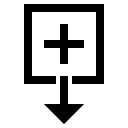
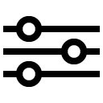
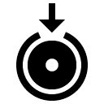
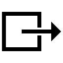
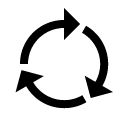
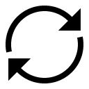

Plug-in step icons
A keyword in the description determines which icon is displayed in the plug-in step.
In most cases, the first word in the description of the plug-in step determines the icon that is displayed. The following table shows the available icons, the keywords that are associated with the icons, and whether the keyword must be the first word in the description.
| Step keyword | Keyword must be the first word in the description | Image name | Displayed image |
|---|---|---|---|
| Activate | Yes | start | |
| Add | Yes | add |  |
| Allocate | Yes | allocate | |
| AppCmd | Yes | shellArgs | |
| Approval | No | setStatus | |
| Assign | Yes | set | |
| Associate | Yes | link | |
| Batch Import | Yes | import | |
| Cancel | Yes | stop | |
| Change | Yes | modify | |
| Check | Yes | check | |
| Configure | Yes | configure |  |
| Copy | Yes | copy | |
| Delete | Yes | delete | |
| Deploy | No | deploy | |
| Define | No | modify | |
| DesiredInventoryAction | No | process | |
| Disable | Yes | stop | |
| Download | No | download | |
| Each | No | runProcess | |
| Enable | Yes | start | |
| Execute | Yes | start | |
| Export | Yes | export | |
| Flip | Yes | flip | |
| FTP | Yes | ftp | |
| Get | Yes | read | |
| Import | Yes | import | |
| Install | No | install |  |
| Launch | Yes | deploy | |
| Link | Yes | link | |
| Modify | Yes | modify | |
| Monitor | Yes | monitor | |
| Move | Yes | move |  |
| Manual Task | No | manualTask | |
| Process | Yes | runProcess | |
| Publish | Yes | publish | |
| Read | Yes | read | |
| Reboot | Yes | restart | |
| Recycle | Yes | recycle |  |
| Register | Yes | create | |
| Receive | Yes | receive | |
| Retrieve | Yes | receive | |
| Restart | Yes | restart | |
| Revert | Yes | revert | |
| Rollback | No | revert | |
| Run | No | runProcess | |
| Run Groovy Script | Yes | runScript | |
| Send | No | send | |
| Shell | Yes | shell | |
| Shell (with xargs) | Yes | shellArgs | |
| Start | Yes | start | |
| Stop | Yes | stop | |
| Set | Yes | set | |
| Submit | Yes | setStatus | |
| Sync | Yes | sync |  |
| Terminate | Yes | stop | |
| Unzip | Yes | unzip | |
| Untar Tarball | Yes | unzip | |
| Update | Yes | sync | |
| Upload | Yes | upload | |
| Upgrade | Yes | upgrade | |
| Undeploy | Yes | undeploy | |
| Uninstall | No | uninstall | |
| Untar | No | unzip | |
| Validate | Yes | setStatus | |
| Verify | Yes | check | |
| View | Yes | monitor | |
| Wait | Yes | wait | |
| WebSphere® | No | websphere |